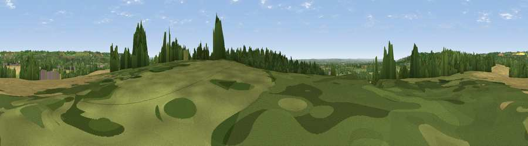

Viewpoint near Egerton
#39766 in England · top 55% of its area beats it · near EgertonWhere it is
The exact computed spot (TQ 90175 48575). Click the marker for map links.
The view, rendered

A 360° render of this exact spot computed from the terrain model, tree cover and land cover — summer colours, afternoon light, calibrated against photographs of famous viewpoints. Real trees, hedges and buildings will differ in detail.
The panorama
Grey silhouette: terrain skyline in each direction (720 bearings, Earth curvature and refraction included). Dashed green: skyline with trees (+15 m) and buildings (+8 m) as obstacles. Blue strip: how far the ground is visible on each bearing.
Where the view opens
Wedge length = distance to the farthest visible ground on that bearing (vegetation-aware). Rings at 10, 25 and 50 km.
What fills the view
37% grassland · 31% woodland · 30% cropland · 2% built-up
Angular shares of the visible panorama (visual magnitude), not map area. Landscape diversity 0.51 (0–1 Shannon).
Key numbers
More beautiful places nearby
The staircase of upgrades: each row has a higher view potential than everything closer. Driving times are estimates from straight-line distance, calibrated against real road routing — check an actual route before setting out.
| Place | Direction | Drive | Score |
|---|---|---|---|
| Viewpoint near Boughton Malherbe | NW · 1 km | ~4 min | 48.0 |
| Viewpoint near Lenham | NNE · 4 km | ~10 min | 55.6 |
| Viewpoint near Charing | ENE · 5 km | ~11 min | 68.6 |
| Viewpoint near Westwell | E · 8 km | ~16 min | 72.2 |
| Viewpoint near Lympne | SE · 24 km | ~39 min | 72.6 |
| Tolsford Hill | ESE · 27 km | ~44 min | 77.9 |
| Viewpoint near Capel-le-Ferne | ESE · 35 km | ~54 min | 80.2 |
| Viewpoint near Willingdon | SW · 56 km | ~78 min | 83.4 |
51.20472, 0.72097 · source: screening · position refined by local search. Computed location — check access rights before visiting.